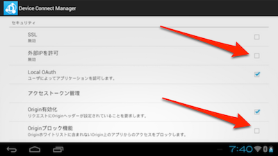
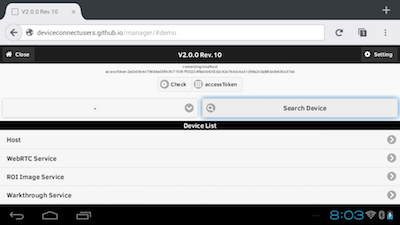
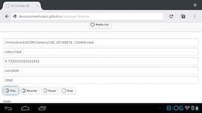

MOVERIOでDeviceConnectを利用する
MOVERIOとDeviceConnectを組み合わせた利用法を紹介します。MOVERIOにはAndroidが組み込まれていますので、DeviceConnect Managerを使って操作が可能です。
こんなことができます
- MOVERIOからTHETAを操作して撮影、写真や動画の閲覧ができます。
- MOVERIOに接続しているスマートデバイスをWeb APIで操作できます
MOVERIOはBluetooth、WiFiを提供しているので、これらを使って各デバイスと接続ができます。
使ってみよう！
セキュリティ設定の変更
MOVERIOにはGoogle Playが入っていません。そのため、まず設定のセキュリティにおいて「提供元不明のアプリ」をチェックする必要があります。
Firefox for Androidのインストール
MOVERIOのデフォルトで入っているブラウザはWebSocketに対応していないため、そのままではデモのUI Appが動作しません。そこで野良のFirefox for Androidをインストールします。これは自己責任の上、インストールしてください。
DeviceConnect Managerのインストール
次にDeviceConnect Managerをインストールします。先ほどインストールしたFirefox for Androidを立ち上げて次のURLにアクセスします。
http://bit.ly/dc-mgr
サイトが表示されたらDownload APKをタップします。

そしてリストが表示されたら
- DeviceConnectManager
- Android Host
をインストールします。

インストール時には権限の確認が出ます。

DeviceConnectManagerの起動
インストールが終わったら、DeviceConnectManagerを開いてください。セキュリティ設定の中にある、外部IPを許可にチェックをし、さらにOriginブロック機能を無効にしてください。

終わったらDeviceConnectManagerを立ち上げます。

これで準備が完了です。
DeviceConnectManagerを表示
再度Firefox for Androidを開いてLaunch UI-Appをタップします。
以下のような画面が表示されるので、accessTokenをタップします。

トークンを求める認証ダイアログが出ますので同意するをタップします。

そうするとアクセストークンが取得できます。

MOVERIOのデータを取ってみる
今回はHostプラグインを使ってMOVERIOのデータを取得してみます。Search DeviceをタップするとHostというのが出ますのでタップします。

そうするとMOVERIO上で取得できる各種機能が出ます。例えばこちらは加速度センサーの値。

メディアファイルを取得したり、

再生もできます。

MOVERIOからデバイスを操作する
このようにMOVERIO自体のデータを操作するのも良いですが、さらにプラグインを使って別なデバイスを操作することもできます。